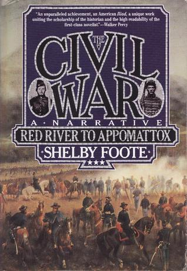

The Civil War, Vol. 3
⭐️⭐️⭐️⭐️
Format: audio (48 hours 2 minutes)
What a great conclusion to this narrative. Shelby Foote did such a great job keeping the narration balanced on both sides, and engaging. The combination of the three books is rather lengthy, and had I spent the time to review the maps at the same time, I probably would have enjoyed it even more.
Even as it was being narrated, I found the ending of this pivotal war to be bittersweet, and I genuinely felt sorry for the south. I loved this quote from Ulysses S. Grant at the surrender of Robert E. Lee's army, "I felt like anything rather than rejoicing at the downfall of a foe who had fought so long and valiantly, and had suffered so much for a cause, though that cause was, I believe, one of the worst for which a people ever fought."
The ingenuity displayed by the South was remarkable, but the sheer power and numbers of the North was ultimately their undoing. It's fascinating that such a significant event in America's history barely took more than four years.
- Previously: David Copperfield
- Next: The Slow Regard of Silent Things